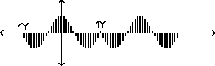
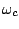
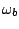
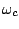
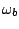
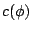
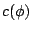
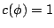
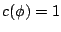

We turn now to the carrier signal, seeking ways to make it more controllable. We would particularly like to be able to slide the spectral energy continuously up and down in frequency. Simply ramping the frequency of the carrier oscillator will not accomplish this, since the spectra won't be harmonic except when the carrier is an integer multiple of the fundamental frequency.
In the stretched wavetable approach we can accomplish this simply by sampling a sinusoid and transposing it to the desired ``pitch". The transposed pitch isn't heard as a periodicity since the wavetable itself is read periodically at the fundamental frequency. Instead, the sinusoid is transposed as a spectral envelope.
Figure 6.7 shows a carrier signal produced in this way, tuned to produce a formant centered at 1.5 times the fundamental frequency. The signal has no outright discontinuity at the phase wraparound frequency, but it does have a discontinuity in slope, which, if not removed by applying a suitable modulation signal, would have very audible high-frequency components.
|  |
Using this idea we can make a complete description of how to use the block
diagram of Figure 6.3 to produce a desired formant. The wavetable
lookup on the left hand side would hold a sinusoid (placed symmetrically so
that the phase is zero at the center of the wavetable). The right-hand-side
wavetable would hold a Hann or other appropriate window function.
If we desire the fundamental frequency to be  , the
formant center frequency to be , and the bandwidth to be ,
we set the ``stretch" parameter to the center frequency quotient
defined as
, the
formant center frequency to be , and the bandwidth to be ,
we set the ``stretch" parameter to the center frequency quotient
defined as
 , and the index of
modulation to the bandwidth quotient,
, and the index of
modulation to the bandwidth quotient,
 .
.
The output signal is simply a sample of a cosine wave at the desired center frequency, repeated at the (unrelated in general) desired period, and windowed to take out the discontinuities at period boundaries.
Although we aren't able to derive this result yet (we will need Fourier analysis), it will turn out that, in the main lobe of the formant, the phases are all zero at the center of the waveform (i.e., the components are all cosines if we consider the phase to be zero at the center of the waveform). This means we may superpose any number of these formants to build a more complex spectrum and the amplitudes of the partials will combine by addition. (The sidelobes don't behave so well: they are alternately of opposite sign and will produce cancellation patterns; but we can often just shrug them off as a small, uncontrollable, residual signal.)
This method leads to an interesting generalization, which is to take a sequence of recorded wavetables, align all their component phases to those of cosines, and use them in place of the cosine function as the carrier signal. The phase alignment is necessary to allow coherent cross-fading between samples so that the spectral envelope can change smoothly. If, for example, we use successive snippets of a vocal sample as input, we get a strikingly effective vocoder; see Section 9.6.
Another technique for making carrier signals that can be slid continuously
up and down in frequency while maintaining a fundamental frequency
is simply to cross-fade between harmonics. The carrier signal is then:
The simplest way of making a control interface for this synthesis technique
would be to use
ramps to update  and , and then to compute
and , and then to compute  and
and  as audio signals from the ramped, smoothly varying
as audio signals from the ramped, smoothly varying  and .
Oddly enough, despite the fact that
and .
Oddly enough, despite the fact that  ,
,  , and
, and  are discontinuous
functions of
, the carrier  turns out to vary
continuously with
, and so if the desired center frequency
is ramped from value to value the result is a continuous sweep in
center frequency. However, more work is needed if discontinuous changes
in center frequency are needed. This is not an unreasonable thing to wish
for, being analogous to changing the frequency of an oscillator discontinuously.
are discontinuous
functions of
, the carrier  turns out to vary
continuously with
, and so if the desired center frequency
is ramped from value to value the result is a continuous sweep in
center frequency. However, more work is needed if discontinuous changes
in center frequency are needed. This is not an unreasonable thing to wish
for, being analogous to changing the frequency of an oscillator discontinuously.
There turns out to be a good way to accomodate this.
The trick to updating  and
and  is to note that  whenever
is to note that  whenever  is a multiple of
is a multiple of  , regardless of the choice of
, regardless of the choice of  ,
,  , and
, and  as long
as . Hence, we may make discontinuous changes in
as long
as . Hence, we may make discontinuous changes in  ,
,  , and
, and  once
per period (right when the phase is a multiple of
once
per period (right when the phase is a multiple of  ), without making
discontinuities in the carrier signal.
), without making
discontinuities in the carrier signal.
In the specific case of FM, if we wish we can now go back and modify the
original formulation to: